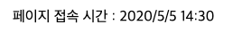

아래와 같은 HTML 웹문서를 작성한 다음(이미 작성되어 있음)
1 | <p>페이지 접속 시간 : <span id="time"></span></p> |
아래와 같은 자바스크립트 코드를 작성한다.
1 2 3 4 5 6 7 8 | var now = new Date(); var year = now.getFullYear(); var month = now.getMonth() + 1; var date = now.getDate(); var hour = now.getHours(); var min = now.getMinutes(); var output = year + '/' + month + '/' + date + ' ' + hour + ':' + min; document.getElementById('time').textContent = output; |
결과는 다음과 같을 것이다.
Date 객체는 일자와 시간을 다루기 위한 내장 객체로, 아래와 같은 기능을 가진다.
Date 객체는 초기화가 필요하다. Date 객체를 사용하고 싶은 경우, 위 예제 코드의 1번 행 코드와 같이 초기화를 해주어야 한다.
1 | var now = new Date(); |
이 프로그램에서는 Date 객체를 초기화해서 변수 now에 대입하고 있다. new는 객체를 초기화하기 위한 키워드이다. Date 객체를 포함한 몇몇 내장 객체를 new를 사용해서 초기화한 후 사용해야 한다.
1 2 3 4 5 | var year = now.getFullYear(); var month = now.getMonth() + 1; var date = now.getDate(); var hour = now.getHours(); var min = now.getMinutes(); |
now 뒤에 오는 기능들은 모두 Date 객체의 메소드이다. 여기서 getMonth() 메소드는 1월부터 12월을 0부터 11이라는 숫자로 표현하므로 주의해야 한다.
위 예제에서는 Date 객체의 getHours 메소드로 가져온 값을 그대로 출력해서 24시간 표기법으로 표기했다. 이 프로그램을 약간 수정해서 시간을 12시간 표기법(14시가 오후 2시로)으로 만들어 보자. 결과값을 가공하여 만들어야 한다.
힌트
아래는 결과의 예이다.
페이지 접속 시간 :